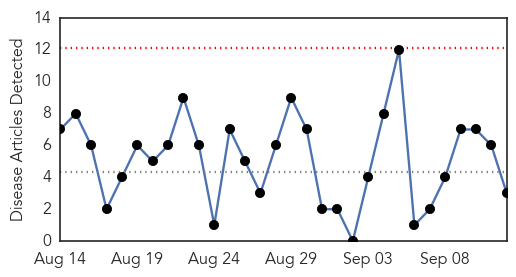

Meningitis
30-Day Web Trend
3 alerts, 0 warnings

30-Day Twitter Trend
1 alerts, 0 warnings

Article Locations

Article Confidences
Top Articles:
- 0.990
- Indiana Child Diagnosed With Enterovirus
- 0.974
- EV-D68, An Old Virus that is Causing New Problems
- 0.749
- MoH launches Haj health awareness campaign
- 0.744
- Saudi- MoH launches Haj health awareness campaign
- 0.686
- Family warns of meningitis
- 0.665
- Brain-eating amoeba forces school board to declare state of emergency
Top Tweets:
-
No tweets found for Sep 12, 2014
West Nile Virus
30-Day Web Trend
0 alerts, 0 warnings

30-Day Twitter Trend
0 alerts, 0 warnings

Article Locations
Article Confidences

Top Articles:
Top Tweets:
-
No tweets found for Sep 12, 2014